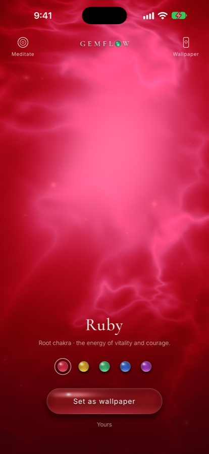

Root chakra · ruby
The root chakra: the red light that brings you home
When you feel like you are floating, with nothing beneath your feet, when safety seems to belong to everyone but you, it is not that you have lost your way. You have lost your ground. The root chakra is where the old traditions say every journey inward begins: at the base of the spine, in a lotus of deep red, where you meet the earth.

Ruby, the red stone of the root chakra, as a living light in the Gemflow app.
When you feel unrooted
Have you been living a little above yourself?
Some days you live mostly in your head: replaying a conversation, rehearsing tomorrow, scrolling past midnight. Your body carries you around like luggage. You long to wake up to something larger, to feel guided, but every path seems to lead somewhere else. Before you can rise, you need somewhere to stand. That is what the root chakra is about.
Mūlādhāra
What the root chakra holds
Its Sanskrit name, Mūlādhāra, joins two words: mūla, root, and ādhāra, support. In yoga traditions it sits at the base of the spine, the place where your body meets the ground. It is linked with safety, belonging and the plain, warm force of being alive: the feeling that you are allowed to be here, that the earth will hold you. Every other chakra rests on it, the way a tree rests on its roots.
A crimson lotus
Why the root chakra is red
“It has four petals of crimson hue.”
That is how a Sanskrit text from 1577 pictures the root lotus. At its heart lies a square of shining golden-yellow, the element of Earth, and on it the seed sound Laṃ, carried by the king of elephants, a picture of strength and steadiness. Inside the lotus lives the goddess Ḍākinī, her eyes brilliant red, glowing “like the lustre of many Suns rising at one and the same time”. Red outside, gold within: a living warmth wrapped around solid ground.
Ruby
The light that brings you back to your body
Red is the colour of blood and of the first light at dawn. It does not ask you to float away; it calls you back in. That is why red stones have long been paired with the root chakra, and ruby, the most treasured of them, is its classic companion. Many people keep a red stone close when they feel scattered: held in the palm, it is a small weight that says you are here.
Earth and sky
Roots that reach for the stars
Grounding is not the opposite of awakening. It is its beginning. In the old picture the chakras rise like lotuses along the spine, from the red root to the thousand-petalled lotus above the crown. A tree can only open towards the sky as far as its roots reach into the earth. When you feel held from below, it becomes easier to open to what is above you: your intuition, your higher self, the quiet sense that you belong to something vast.
A grounding ritual
Five minutes to come back to the earth
- Sit on the floor or a chair with both feet flat on the ground. Let your spine be tall but soft.
- Hold a red stone in your left hand, or let ruby’s light glow on your phone in front of you.
- Bring your attention to the base of your spine. Breathe slowly, as if each out-breath sinks a little lower.
- Imagine red roots growing from there down into the earth: through the floor, through soil and stone, into the warm centre of the world.
- On each in-breath, let that warmth rise back up into you. If you like, hum a low lam on the out-breath.
- After a few minutes, say quietly: I am here. I am held. Then open your eyes and feel your feet before you stand.
The rainbow road
How the red lotus travelled to us
The root chakra’s red is older than the rainbow charts you see today. It has passed from hand to hand for more than four centuries.
- 1577 · In Bengal, the tantric teacher Pūrṇānanda describes six lotuses along the spine in the Ṣaṭ-Cakra-Nirūpaṇa. The lowest is crimson, with a golden square at its heart.
- 1919 · Sir John Woodroffe, writing as Arthur Avalon, carries the text into English as The Serpent Power, and the lotuses begin their journey west.
- 1927 · C. W. Leadbeater describes the chakras as wheels of light in The Chakras. He sees the root as four spokes of red and orange, glowing a fiery orange-red when it wakes.
- Today · Over the 20th century the seven centres came to be painted as a rainbow, red at the root to violet at the crown. Along the whole road, the root has kept its red.
Your daily companion
Ruby and 396 Hz in Gemflow
In Gemflow, the root chakra is ruby: a rose light that pulses slowly inside a deep red crystal, alive on your screen and never the same twice. Touch it and it follows you. Open Meditate and the stone breathes with you while a low 396 Hz tone hums beneath guqin and singing bowls. One minute, every day, to come back to your body and the ground beneath you. More about its tone: 396 Hz, the root chakra frequency; more about the stone: ruby.
Walk the other chakras
Every chakra has its own colour and its own stone: which stone goes with each chakra colour. For the frequency of each, see the chakra stones and frequencies chart. The heart chakra’s colour has changed the most along the road: which stone belongs to the heart chakra.
Questions
What colour is the root chakra?
Red. In the 1577 Ṣaṭ-Cakra-Nirūpaṇa its four petals are crimson around a yellow square of Earth; Leadbeater (1927) described it as red and orange; in the modern rainbow system it is red.
What does Muladhara mean?
Mūlādhāra joins two Sanskrit words: mūla, root, and ādhāra, support. It is the lowest of the chakras, at the base of the spine.
Where does the root chakra’s red colour come from?
The classic detailed source is the Ṣaṭ-Cakra-Nirūpaṇa, written by Pūrṇānanda in 1577, which describes the root lotus as having four crimson petals. Sir John Woodroffe (Arthur Avalon) translated it into English in The Serpent Power (1919). C. W. Leadbeater’s The Chakras (1927) described the root centre as red and orange. The seven-colour rainbow sequence used today is a 20th-century Western development; in it the root is red. The root is one of the few chakras whose colour is close in all three.
Which stone goes with the root chakra?
Modern guides pair it with red stones, following its colour: ruby, garnet and red jasper are common choices. The older Sanskrit texts do not name a stone. Ruby is the root chakra stone in the Gemflow app.
Which frequency goes with the root chakra?
In meditation music the root chakra is usually paired with 396 Hz, one of the Solfeggio frequencies. The pairing comes from modern meditation practice, not from the older texts. In Gemflow, ruby carries 396 Hz.
How do I ground myself with a root chakra stone?
Sit with your feet on the floor, hold the stone, bring your attention to the base of your spine and breathe slowly for a few minutes, imagining roots growing down into the earth.
Can a root chakra stone heal me?
A stone is not a medical treatment. People use red stones as a companion for meditation and ritual, and as a reminder to come back to the body.
Notes and sources
- Pūrṇānanda, Ṣaṭ-Cakra-Nirūpaṇa (1577, sixth chapter of the Śrī-tattva-cintāmaṇi), in Arthur Avalon (Sir John Woodroffe), The Serpent Power (1919): verse 4 (four crimson petals, letters “of the shining colour of gold”; the commentary glosses śoṇa as the crimson of the red lotus), verse 5 (the square of Earth, “of a shining yellow colour”), verse 6 (the seed sound Laṃ on the king of elephants), verse 7 (Ḍākinī, “her eyes are brilliant red”). The meaning of Mūlādhāra follows Avalon’s note.
- C. W. Leadbeater, The Chakras (Theosophical Publishing House, 1927): the root centre as four spokes, “alternately red and orange in hue”, fiery orange-red when fully active.
- Kurt Leland, Rainbow Body: A History of the Western Chakra System from Blavatsky to Brennan (Ibis Press, 2016), on how the rainbow sequence took shape in the 20th century.
- Pairing red stones and 396 Hz with the root chakra is a modern meditation practice. Gemflow is for relaxation, meditation and ritual; it is not a medical product.
© 2026 Gemflow · Home · Chakra colors · Chakra stones chart · Heart chakra stone · 396 Hz · Ruby · Citrine · Emerald · Sapphire · Amethyst · YouTube · Privacy